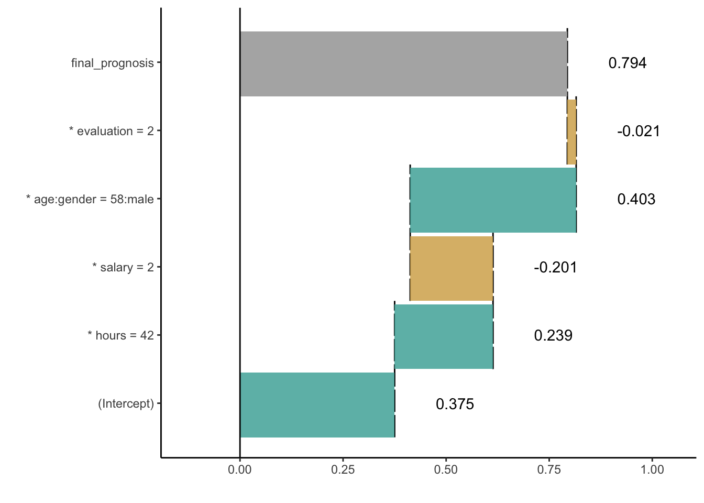

Chapter 5 Break Down for Interactions
In the Section 4 we presented model agnostic approach for additive decomposition of a model prediction for a single observation.
For non-additive models the variables contributions depend on values of other variables.
In this section we present an algorithm that identifies interactions between pairs of variables and include such interactions in variable decomposition plots. Here we present an algorithm for pairs of variables, but it can be easily generalized to larger number of variables.
5.1 The Algorithm
This algorithm is also composed out of two steps. In the first step variables and pairs of variables are ordered in terms of their importance, while in the second step the consecutive conditioning is applied to ordered variables.
To determine an importance of variables and pairs of variables following scores are being calculated.
For a single variable
\[ score_1(f, x^*, i) = \left| E [f(X)|X_i = x^*_i] - E [f(X)]\right| \] For pairs of variables
\[ score_2(f, x^*, (i,j)) = \left| E [f(X)|X_i = x^*_i, X_j = x^*_j] - E [f(X)|X_i = x^*_i] - E [f(X)| X_j = x^*_j]+ E [f(X)] \right| \] Note that this is equivalent to
\[ score_2(f, x^*, (i,j)) = \left| E [f(X)|X_i = x^*_i, X_j = x^*_j] - score_1 (f, x^*, i) - score_1 (f, x^*, j) + baseline \right| \] In other words the \(score_1(f, x^*, i)\) measures how much the average model response changes if variable \(x_i\) is set to \(x_i^*\), which is some index of local variable importance. On the other hand the \(score_2(f, x^*, (i,j))\) measures how much the change is different than additive composition of changes for \(x_i\) and \(x_j\), which is some index of local interaction importance.
Note, that for additive models \(score_2(f, x^*, (i,j))\) shall be close to zero. So the larger is this value the larger deviation from additivness.
The second step of the algorithm is the sequential conditioning. In this version in every new step we condition on a single variable of pair of variables in an order determined by \(score_1\) and \(score_2\).
The complexity of the first step id \(O(p^2)\) where \(p\) stands for the number of variables. The complexity of the second step is \(O(p)\).
5.2 HR dataset: Hire or Fire?
Again, let us consider a HR dataset. The table below shows \(score_1\) and \(score_2\) calculated for consecutive variables.
| Ei f(X) | score1 | score2 | |
|---|---|---|---|
| hours | 0.616200 | 0.230614 | |
| salary | 0.225528 | -0.160058 | |
| age:gender | 0.516392 | 0.146660 | |
| salary:age | 0.266226 | 0.062026 | |
| salary:hours | 0.400206 | -0.055936 | |
| evaluation | 0.430994 | 0.045408 | |
| hours:age | 0.635662 | 0.040790 | |
| salary:evaluation | 0.238126 | -0.032810 | |
| age | 0.364258 | -0.021328 | |
| evaluation:hours | 0.677798 | 0.016190 | |
| salary:gender | 0.223292 | -0.007710 | |
| evaluation:age | 0.415688 | 0.006022 | |
| gender | 0.391060 | 0.005474 | |
| hours:gender | 0.626478 | 0.004804 | |
| evaluation:gender | 0.433814 | -0.002654 |
Once we determined the order, we can calculate sequential conditionings. In the first step we condition over variable hours, then over salary. The third position is occupied by interaction between age:gender thus we add both variables to the conditioning
| variable | cumulative | contribution |
|---|---|---|
| (Intercept) | 0.385586 | 0.385586 |
| * hours = 42 | 0.616200 | 0.230614 |
| * salary = 2 | 0.400206 | -0.215994 |
| * age:gender = 58:male | 0.796856 | 0.396650 |
| * evaluation = 2 | 0.778000 | -0.018856 |
| final_prognosis | 0.778000 | 0.778000 |
5.3 Break Down Plots
Break Down Plots for interactions are similar in structure as plots for single variables. The only difference is that in some rows pair of variable is listed in a single row. See an example in Figure ??.
Figure 5.1: (fig:bdInter1) Break Down Plot for variable attrbution with interactions
5.4 Pros and cons
Break Down for interactions shares many features of Break Down for single variables. Below we summarize unique strengths and weaknesses of this approach.
Pros
- If interactions are present in the model, then additive contributions may be misleading. In such case the identification of interactions leads to better explanations.
- Complexity of Break Down Algorithm is quadratic, what is not that bad if number of features is small or moderate.
Cons
- For large number of variables, the consideration of all interactions is both time consuming and sensitive to noise as the number of \(score_2\) scores grow faster than number of \(score_1\).
5.5 Code snippets for R
The algorithm for Break Down for Interactions is also implemented in the break_down function from breakDown package.
It is enough to set argument check_interactions = TRUE to identify interactions.
Model preparation
First a model needs to be trained.
library("DALEX")
library("randomForest")
model <- randomForest(status ~ gender + age + hours + evaluation + salary, data = HR)
model##
## Call:
## randomForest(formula = status ~ gender + age + hours + evaluation + salary, data = HR)
## Type of random forest: classification
## Number of trees: 500
## No. of variables tried at each split: 2
##
## OOB estimate of error rate: 27.31%
## Confusion matrix:
## fired ok promoted class.error
## fired 2273 390 192 0.2038529
## ok 520 1257 444 0.4340387
## promoted 202 395 2174 0.2154457Model exploration with the breakDown package is performed in three steps.
1. Create an explainer - wrapper around model and validation data.
Since all other functions work in a model agnostic fashion, first we need to define a wrapper around the model. Here we are using the explain() function from DALEX package.
explainer_rf_fired <- explain(model,
data = HR,
y = HR$status == "fired",
predict_function = function(m,x) predict(m,x, type = "prob")[,1],
label = "fired")2. Select an observation of interest.
Break Down Plots decompose model prediction around a single observation. Let’s construct a data frame with corresponding values.
new_observation <- data.frame(gender = factor("male", levels = c("male", "female")),
age = 57.7,
hours = 42.3,
evaluation = 2,
salary = 2)
predict(model, new_observation, type = "prob")## fired ok promoted
## 1 0.808 0.186 0.006
## attr(,"class")
## [1] "matrix" "votes"3. Calculate Break Down decomposition
The break_down() function calculates Break Down contributions for a selected model around a selected observation.
Note that check_interactions = TRUE is needed to identify interactions.
The result from break_down() function is a data frame with variable attributions.
library("breakDown")
bd_rf <- break_down(explainer_rf_fired,
new_observation,
check_interactions = TRUE)
bd_rf## contribution
## (Intercept) 0.375
## * hours = 42 0.239
## * salary = 2 -0.208
## * age:gender = 58:male 0.401
## * evaluation = 2 0.001
## final_prognosis 0.808
## baseline: 0The generic plot() function creates a Break Down plots.
